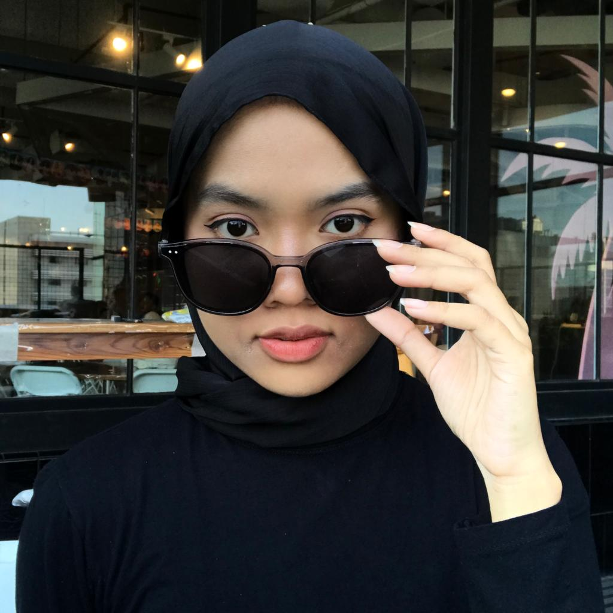

Full-time Computer Science Student at IPB University
Tech Enthusiast
Hello there! I am currently pursuing a Computer Science degree at IPB University, where I am immersed in the world of technology and innovation. With a solid foundation in computer science, I am honing my skills and knowledge to tackle challenges in the STEM industry.
During my time at IPB University, I had the privilege of leading the Wirasena Adikara team as the Anantari in MPKMB 59, a role that allowed me to inspire and guide fellow students. My journey began earlier at MAN 7 Jakarta, where I achieved a 1st Honor Degree and consistently excelled academically.
My commitment extends beyond academics, as evidenced by my involvement with AIESEC in IPB. As a part of the Management Board of Institutional Relation, I forged impactful partnerships with NGOs, institutions, and media outlets. In roles such as Social Media Specialist at Seruan Muda Indonesia and Finance Marketing Management Intern at Arise Arose, I developed skills in content creation, audience engagement, and marketing strategy.
In a nutshell, I am a dedicated individual who is committed to growth, innovation, and making a meaningful impact. I thrive on challenges and believe in continuous learning as a means to achieve success.
p.s. i love cat